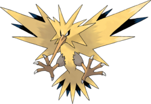
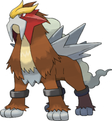

01
January
KantoZapdos
JohtoEntei
Hier findest du eine Übersicht, welche roamenden Legendären Pokémon (Romer) in welchem Monat in PokeMMO verfügbar sind.
Jeder Monat enthält 1 Kanto-Vogel und 1 Johto-Raubtier.
Du kannst jeden Monat 2 Legendäre Pokémon fangen - jeweils:
1 aus Johto (die legendären Raubtiere)
1 aus Kanto (die legendären Vögel)
Romer sind:
Die drei Raubtiere aus Johto
Die drei Vögel aus Kanto
Um sie fangen zu können, musst du die Pokémon-Liga der jeweiligen Region abgeschlossen haben.
Spawn-Mechanik:
Sie erscheinen als zufällige Wild-Begegnung (Random Encounter).
Nur in Außenbereichen mit Gras.
Nicht in Höhlen.
Nicht in Wäldern.
Nicht beim Angeln.
Legendäre Raubtiere (Johto):
Besiege den Ho-Oh-Bosskampf während der Johto-Story.
Danach erscheint das aktuelle Monats-Pokémon.
In allen Außen-Grasflächen in Johto (außer Safari-Zone).
Suicune kann zusätzlich beim Surfen erscheinen.
Begegnungsrate: extrem gering (<0,1%).
Legendäre Vögel (Kanto):
Sammle 8 Orden in Kanto.
Danach erscheint das Monats-Pokémon.
In allen Außenbereichen in Kanto (inkl. Sevii-Inseln).
Wichtig:
Lockparfums erhöhen nicht die Spawnchance.
Kein Repel-Trick möglich.
Fähigkeiten wie Bedroher/Druck helfen nicht.
Sie ersetzen eine normale Begegnung.
Du kannst ihm erneut begegnen.
Die Spawnchance erhöht sich deutlich, wenn du es beim ersten Mal nicht fängst.
Ja.
Der Shiny-Status wird bei der ersten Begegnung festgelegt und bleibt danach fix.
Klassisches "Shiny Hunting" durch Resetten ist nicht möglich.
1 pro Charakter.
Pro Region.
Pro Monatsrotation.
Beispiel: Wenn du Suicune im August fängst, kannst du im November erneut eines fangen.
Johto- und Kanto-Legendäre sind unabhängig voneinander.
Nein.
Alle drei sind unabhängig voneinander.
Du kannst alle fangen - sogar Duplikate, sobald die nächste Rotation beginnt.
Ja.
Raubtiere: Anpassung über Rainbow Quills.
Vögel: Anpassung über Elemental Orbs.
Wesen: Änderung über Nature Herbs.
Rainbow Quills erhältst du beim Fang eines Raubtiers (20 Stück garantiert).
Weitere durch Pickup-Fähigkeit in Johto.
Nature Herbs droppen zufällig beim Ernten von Gracidea-Pflanzen.
Elemental Orbs droppen zufällig beim Besiegen wilder Pokémon mit Attacken des passenden Elements.